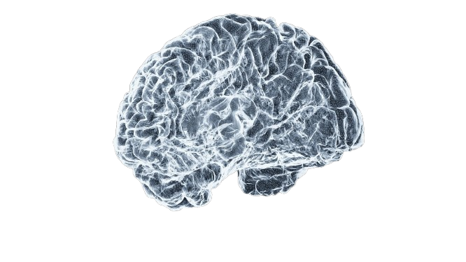
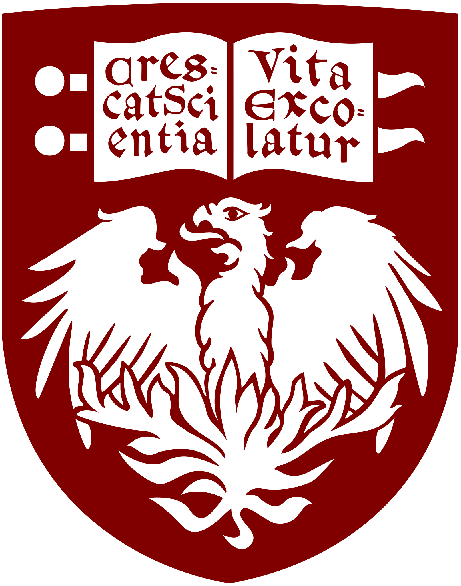
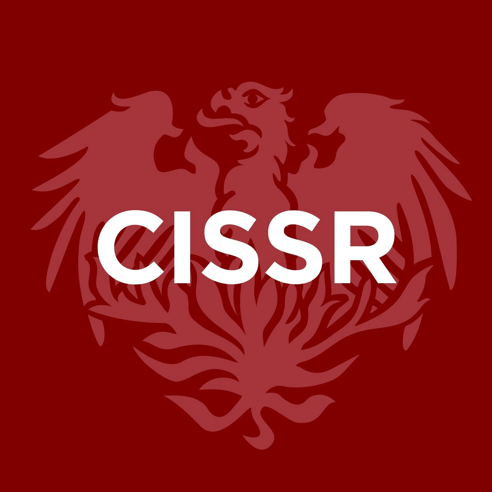

I am a Bachelor of Science Candidate in Neuroscience at the University of Chicago, minoring in Health and Society. I am expected to graduate June 2030.
Beyond cognitive neuroscience, my research interests span attention and memory, critical disability studies/"crip theory," genetic engineering and modification, and developmental social cognition.
I am interested in pursuing an M.D./M.P.H., and am completing my BS Laboratory Research thesis (NSCI 29100-29102) in September of 2029 under Drs. Edward K. Vogel and Edward S. Awh.

My ORCID iD can be found here, and my SSRN publications here.
I am always happy to hear from you! You can reach me via email at:
Professional: nsheybani@outlook.com
Institutional: sheybani@uchicago.edu
(I don't bite — I promise.)